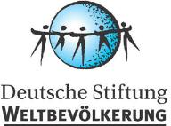

پذيرش > سایت نوشته ها > حقوق زنان، محور گزارش سازمان "جمعیت جهان"
 محوریت با نابرابری است محوریت با نابرابری است

 حقوق زنان، محور گزارش سازمان "جمعیت جهان" حقوق زنان، محور گزارش سازمان "جمعیت جهان"
24 آبان 1387 - دویچه وله - نسخه قابل چاپ
بنیاد "جمعیت جهان" و وزارت توسعه آلمان، روز چهارشنبه (۲۲ آبان) تازهترین گزارش خود (۲۰۰۸) در زمینه جمعیت را منتشر کردند. عدم تساوی حقوق زن و مرد و لزوم فراهمآوردن شرایطی برای تحقق حقوق زنان، محور اصلی گزارش امسال هستند.
عدم رعایت حقوق زنان در بسیاری از کشورها، مانعی برای توسعه یافتگی این جوامع به شمار میآید. سطح و نوع محرومیت زنان از حقوقشان، از جامعهای به جامعه دیگر متفاوت است. این کمبود گاهی عدم دسترسی به آموزش است و گاهی آداب و رسومی که سلامت زنان را به خطر میاندازد؛ مانند ختنه دختران.
بر اساس گزارش سال ۲۰۰۸ بنیاد "جمعیت جهان" آلمان که با مشارکت وزارت توسعه و همکاریهای اقتصادی این کشور در روز چهارشنبه در برلین منتشر شد، فرهنگ عمومی باید در آینده نقش مهمتری در زمینه حقوق زنان ایفا کند. تنها از این طریق میتوان به تحقق تساوی حقوق زنان و مردان در جامعه امیدوار بود.
با وجود تأکید بسیاری از کنوانسیونها و تفاهمنامههای بینالمللی بر لزوم رعایت حقوق زنان، هنوز هم در بسیاری از جوامع، تساوی حقوق زن و مرد وجود ندارد و این نابسامانی در اعماق فرهنگی جامعه ریشه دوانده است.
بتینا ماس از اعضای صندوق جمعیت سازمان ملل میگوید: «از هر سه بیسواد جهان، دو نفر زن هستند. هفتاد درصد کودکانی هم که به مدرسه نمیروند، دختربچهها هستند. در سراسر جهان، زنان دستمزد کمتری نسبت به مردان دریافت میکنند، حتی در آلمان. در آفریقا در مناطق جنوبی صحرا، ۵۹ درصد از مبتلایان به ایدز را زنان تشکیل میدهند.» به اعتقاد این کارشناس به همین دلیل لازم است که تغییرات فرهنگی فراوانی در جواع مختلف رخ دهد.
به اعتقاد کارشناسان اگر بناست ریشههای فقر خشکانده شود و کشورها توسعه یابند، باید به جنگ ارزشها و باورهای فرهنگیای رفت که به زنان ظلم میکنند.
سلامت و بهداشت از عرصههایی است که زنان در آن با کمبودهای فراوانی مواجهاند. هر سال ۵۰۰ هزار زن در سراسر جهان در اثر مشکلات زمان بارداری یا به هنگام زایمان جان خود را از دست میدهند. وزارت توسعه و همکاریهای اقتصادی آلمان در حال حاضر مشغول همکاری با ۱۴ کشور جهان است. خانم هایدهماری ویچورک-تسویل، وزیر این وزرتخانه، در این مورد میگوید: «ما به عنوان مثال در کنیا به زنان خدمات درمانی ارائه میدهیم و ۵۰ هزار زن از این خدمات استفاده میکنند. به گفته وی، در مناطقی که زنان تحت پوشش این خدمات هستند، تعداد مرگ ومیر دوره بارداری یا هنگام زایمان مادران، به شدت کاهش یافته است.» وزیر توسعه آلمان با ارائه این مثال تأکید میکند که امکان مبارزه با کمبودها وجود دارد و لازمه آن تنها اراده کشورهاست. به اعتقاد او، به رسمیتشناختن استقلال و حقوق زنان، باید در اولویت قرار گیرد.
دسترسی به آموزشهای تنظیم خانواده و روشنگری در این زمینه، از سیاستهای بسیار مهم در زمینه مبارزه با فقر محسوب میشود. در حال حاضر، هر زن آفریقایی به طور متوسط، ۶/ ۴ کودک به دنیا میآورد در حالی که این عدد در اروپا ۴۵/ ۱ و در آلمان ۳۶/ ۱ است.
: رناته بر : هفت میلیون زایمان سالانه در سراسر جهان، حاصل بارداری ناخواسته هستند(عکس از آرشیو)رناته بِر (Renate Bähr) از اعضای سازمان "جمعیت جهان" آلمان، به بیگانگی بسیاری از جوانان با مقوله "تنظیم خانواده" اشاره میکند. به گفته وی، هر ساله ۱۴ میلیون زن جوان و دختران زیر ۱۸ سال زایمان میکنند که بیش از نیمی از این تعداد، بارداریهای ناخواستهاند.
در گزارش سال جاری همچنین آمده است که برای پیشبرد موفقیتآمیز تغییرات فرهنگی در هر جامعه، همکاری و ارتباط با افراد و نهادهای سنتی آن جامعه بسیار مؤثر است، زیرا رأی این گروه، تأثیر فراوانی در میان مردم دارد. به اعتقاد کارشناسان هنگامیکه این "نگهبانان" آداب و رسوم و باورهای سنتی به تلاش برای تحقق حقوق زنان برخیزند، سطح تغییرات در جامعه بسیار گسترده خواهد بود. به عنوان مثال راهبهای کامبوجی و سران قومی و قبیلهای در زیمبابوه، نقش کلیدی در مبارزه با ایدز ایفا میکنند. رهبران محلی در نیجریه نیز روز به روز نقش مهمتری در روشنگری مردان این کشور در پایبندی به اصول تنظیم خانواده بازی میکنند.
بر اساس گزارش سازمان "جمعیت جهان" آلمان، جمعیت کره زمین در سال جاری بالغ بر ۶ میلیارد و ۷۵۰ میلیون است که از این تعداد ۴ میلیارد نفر تنها در قاره آسیا زندگی میکنند. پیشبینی میشود که جمعیت زمین در سال ۲۰۵۰، با رشد فعلی، به ۹ میلیارد و ۲۰۰ میلیون نفر برسد. در آن زمان جمعیت آفریقا با رشد تقریبا یک میلیاردی، به حدود ۲ میلیارد نفر خواهد رسید.
دویچه وله
ارسال به
بالاترین
،
توییتر
،
فریندفید
،
فیسبوک
در همين بخش :
 یک خبر تلخ؟ یک قانونشکنی؟ یک تصمیم بخشنامهای جدید؟ یک خبر تلخ؟ یک قانونشکنی؟ یک تصمیم بخشنامهای جدید؟
چرا بایست به سکسوالیته پرداخت؟ / نفیسه آزاد
آزارجنسی خانگی؛ «قربانی» نه، «نجات یافته»
زنان، بزرگترین بازندگان بهار عرب
سانسور از دیدگاه جنسیتی/الهه امانی
ديگر بخش ها :
طرح یک میلیون امضا
|
مقالات
|
سایت نوشته ها
|
اخبار
|
گزارش كمپين
|
گفت و گو
|
علیه سکوت
|
كوچه به كوچه
|
نامه های شما
|
گزارش ویژه
|
گفتگو با اعضا
|
ویژه سالگرد کمپین
|
تصویر برابری
|
دل آرام علی
|
تریبون
|
مقالات
|
تاریخ شفاهی
|
خارج از چارچوب
|
کتابخانه
|
درباره کمپین
|
کمپین در شهرها
|
کمپین در بند
|
صدای تغییر
|
ویژه 22 خرداد
|
لایحه حمایت از خانواده
|
گالری
|
عشا مومنی
|
امیر یعقوبعلی
|
خدیجه مقدم
|
راحله عسگری زاده و نسیم خسروی
|
پروین اردلان،جلوه جواهری، مریم حسین خواه، ناهید کشاورز
|
زینب پیغمبرزاده
|
سعیده امین، سارا ایمانیان، محبوبه حسین زاده، ناهید کشاورز و همایون نامی
|
احترام شادفر
|
نسیم سرابندی زاده،فاطمه دهدشتی
|
وبلاگ مهمان
|
پرونده خرم آباد
|
دستگیری ها
|
مریم مالک
|
پرستو اللهیاری
|
مهرنوش اعتمادی
|
سمیه رشیدی
|
Other Languages
|
همراهان
|
«فراخوان کمپین ده روز با بهاره هدایت»
| English
|